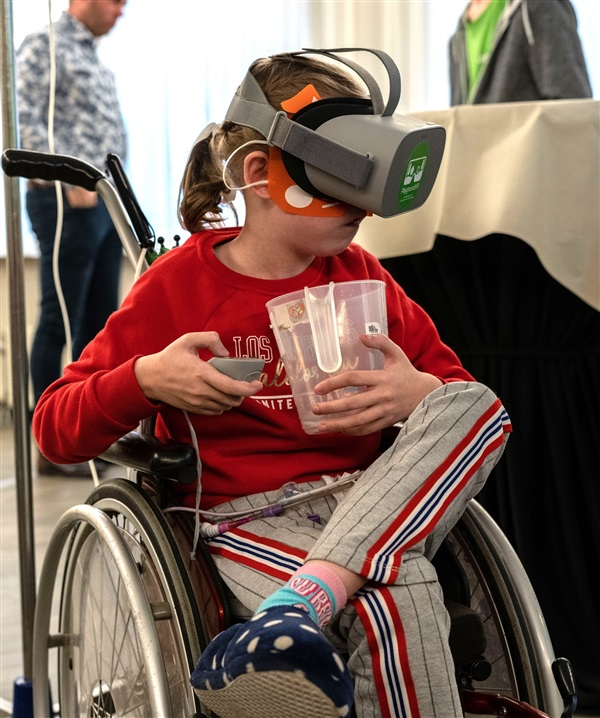

De makers zien nu al meer mogelijkheden met de virtuele speeltuin. Ook kinderen met een fysieke beperking zouden hiermee kunnen buitenspelen. Er zou daarvoor wel een nieuw soort controller nodig zijn. De versies die nu standaard worden geleverd bij een VR-bril, en waar kinderen bijvoorbeeld een bal mee kunnen pakken en gooien, vinden de makers nog te klein en gevoelig. Kinderen met bijvoorbeeld een handicap hebben iets nodig wat grover werkt. Maar misschien zou het ook zonder controller kunnen. “We kunnen bijvoorbeeld ook werken met een brein-computer interface of andere sensoren. Onze eerste ideeën staan al op papier” zegt een van de makers, Jason van Eunen. “VR-brillen zijn natuurlijk ook nog volop in ontwikkeling en het is spannend om te zien welke nieuwe opties dat brengt.”
